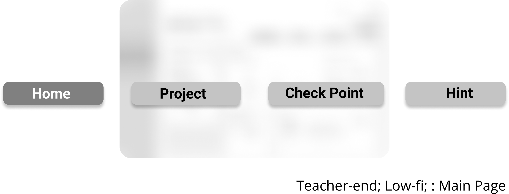
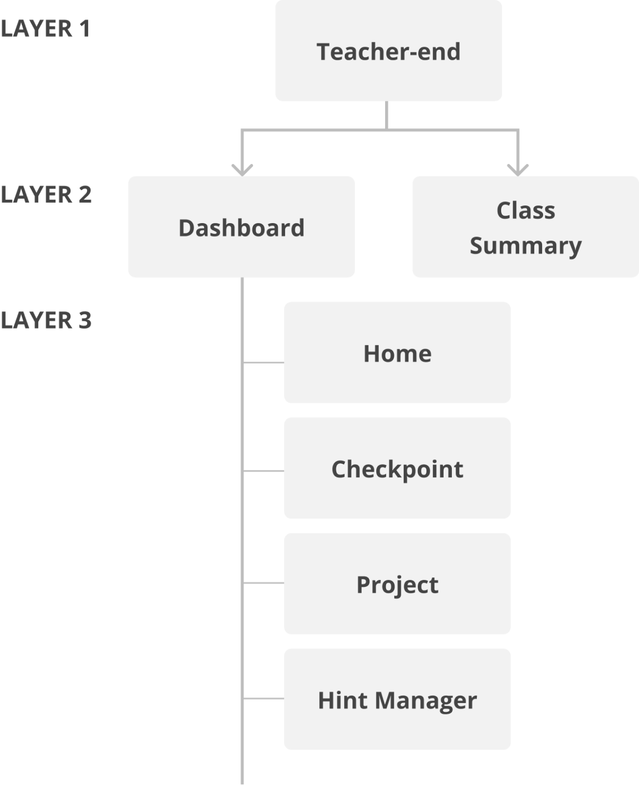
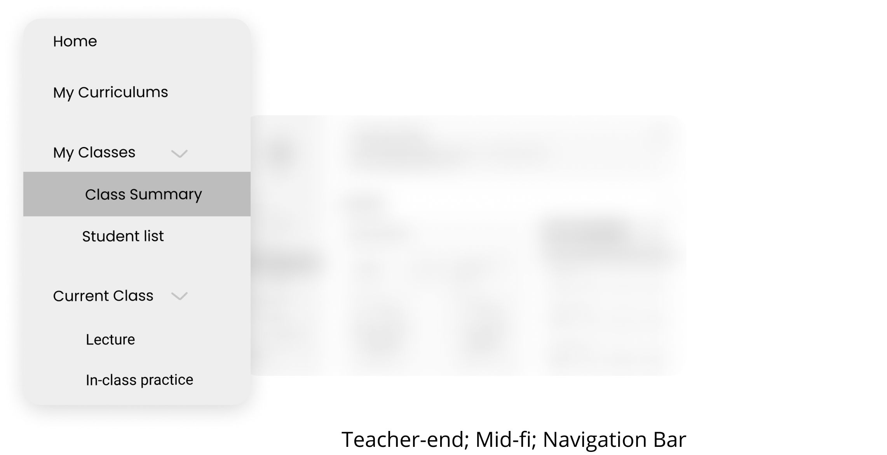
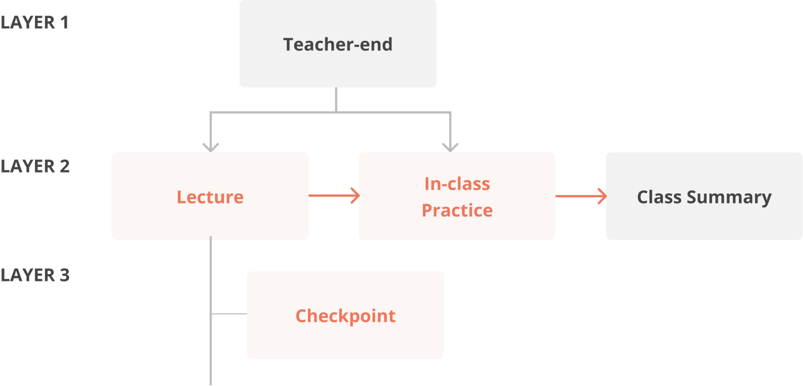

Overview

1. How we display student data/information to teachers
Communicating with real-time data is more about telling a specific story, it’s about starting a guided conversation with targeted audience. We did rounds of structure iterations to explore the form we should take, the navigation and interactions that make our dashboard useful and engaging for teachers.
Iteration Round 1: Low-fi Teacher Inteface In-class Learninng Analytical Dashboard
When doing sketch work and low-fi version, we put all the tabs teachers might need in the classtime of the same layer.


Iteration Round 2: Mid-fi Teacher Inteface In-class Learninng Analytical Dashboard
In the mid-fi version, we made each tab appeared over time since we realized that teachers don’t need to go back to prior session during one class.


Mid-Fidelity Prototyping
Testing Round 2 - Usability Testing
High-Fidelity Prototyping
Iteration
iteration